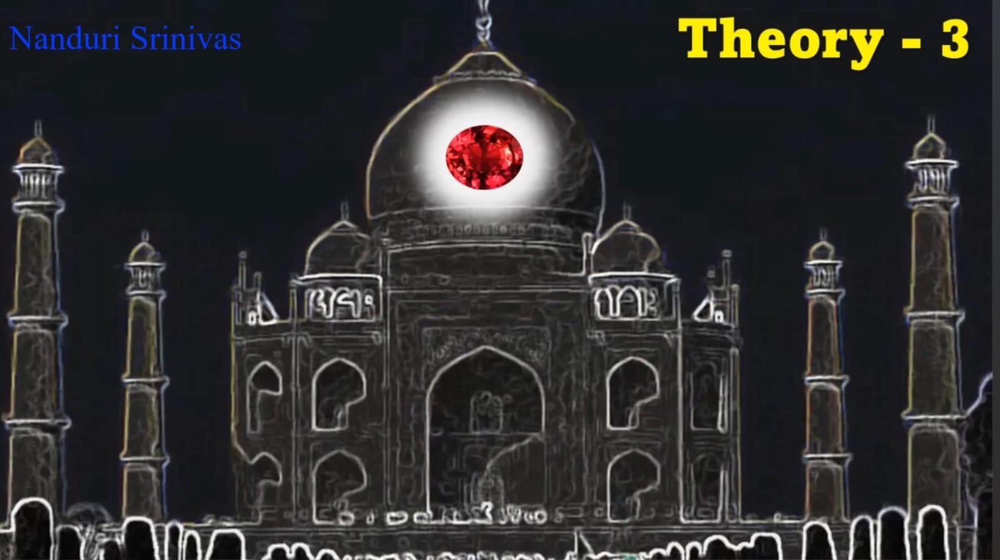
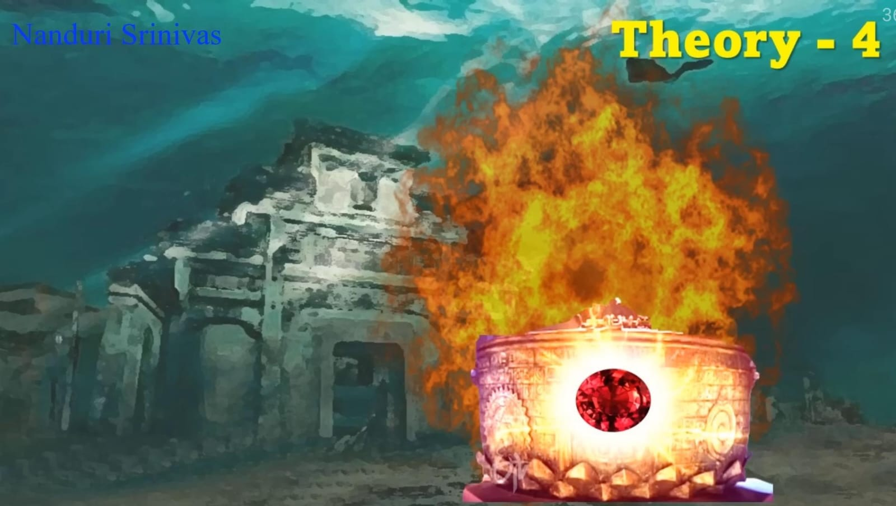

Theory #3 Syamantaka Mani is in the iconic dome of the distinguished Taj Mahal
Ashwin Sanghi's thriller "Krishna Key" argues in favour of the aforementioned theory
Ashwin extensively researched on temples of Vrindavan, Taj Mahal etc for his then upcoming fiction irrelevant to the gem
Lets assume the gem "IS" in the dome of Taj, Delhi would not experience riots, droughts or any sort of calamity
Taj dome would have caved in long back with all that gold. Eventually, Ashwin stated that his work is indeed fictional

Theory #4 The most-believed by far; to this day, Syamantaka Mani remains submerged in the waters of Dwaraka
Telugu movie Devi Putrudu corroborated the aforementioned theory with lyricist Jonnavithula's song "Keratala aduguna..."
The movie featured a treasure chest with a brilliant gem akin to two Suns in the sky with no mention of Syamantaka Mani
Are Sudarshana chakra, Panchajanya and Syamantaka Mani submerged in the waters of Dwaraka?
Bhagavatam states that all transcendental attributes circumambulated the Supreme and ascended to their respective places
If the gem remained in Dwaraka, it would not submerge as it is capable of preventing natural calamities
Also, imagine the amount of gold if it remained submerged in the waters of Dwaraka. So, theory #4 is inconsistent.
« Previous
Next »